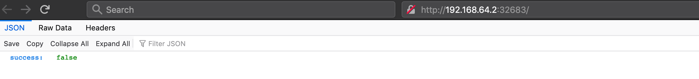
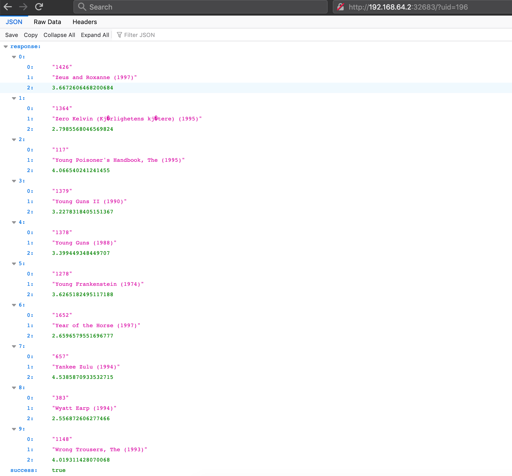

This time, instead of the weather app, we will deploy a container containing our recommendation model. Here are the steps.
Lets start minicube
(datasci-dev) ttmac:docker-prediction-service theja$ minikube start
😄 minikube v1.13.0 on Darwin 10.14.6
▪ MINIKUBE_ACTIVE_DOCKERD=minikube
✨ Using the hyperkit driver based on existing profile
👍 Starting control plane node minikube in cluster minikube
🔄 Restarting existing hyperkit VM for "minikube" ...
🐳 Preparing Kubernetes v1.19.0 on Docker 19.03.12 ...
🔎 Verifying Kubernetes components...
🌟 Enabled addons: default-storageclass, storage-provisioner
🏄 Done! kubectl is now configured to use "minikube" by default
Ensure that docker can see minicube specific registry
(datasci-dev) ttmac:docker-prediction-service theja$ minikube docker-env
export DOCKER_TLS_VERIFY="1"
export DOCKER_HOST="tcp://192.168.64.2:2376"
export DOCKER_CERT_PATH="/Users/theja/.minikube/certs"
export MINIKUBE_ACTIVE_DOCKERD="minikube"
# To point your shell to minikube's docker-daemon, run:
# eval $(minikube -p minikube docker-env)
(datasci-dev) ttmac:docker-prediction-service theja$ eval $(minikube -p minikube docker-env)
Go to the directory containing the trained model that we created before. The directory should have
Once there, build an image. This image will be registered with minikube’s registry.
(datasci-dev) ttmac:docker-prediction-service theja$ docker build -t prediction-service-k8s .
Sending build context to Docker daemon 304.6kB
Step 1/8 : FROM continuumio/miniconda3:latest
latest: Pulling from continuumio/miniconda3
68ced04f60ab: Pull complete
9c388eb6d33c: Pull complete
96cf53b3a9dd: Pull complete
Digest: sha256:456e3196bf3ffb13fee7c9216db4b18b5e6f4d37090b31df3e0309926e98cfe2
Status: Downloaded newer image for continuumio/miniconda3:latest
---> b4adc22212f1
Step 2/8 : MAINTAINER Theja Tulabandhula
---> Running in 9b4a3708a4f6
Removing intermediate container 9b4a3708a4f6
---> 2ebbbd14e3d3
Step 3/8 : RUN conda install -y flask pandas && conda install -c conda-forge scikit-surprise && conda install pytorch torchvision cpuonly -c pytorch
---> Running in 0ce30dc6b5a6
Collecting package metadata (current_repodata.json): ...working... done
Solving environment: ...working... done
## Package Plan ##
environment location: /opt/conda
added / updated specs:
- flask
- pandas
The following packages will be downloaded:
package | build
---------------------------|-----------------
blas-1.0 | mkl 6 KB
ca-certificates-2020.7.22 | 0 125 KB
certifi-2020.6.20 | py37_0 156 KB
click-7.1.2 | py_0 71 KB
conda-4.8.4 | py37_0 2.9 MB
flask-1.1.2 | py_0 78 KB
intel-openmp-2020.2 | 254 786 KB
itsdangerous-1.1.0 | py37_0 28 KB
jinja2-2.11.2 | py_0 103 KB
markupsafe-1.1.1 | py37h14c3975_1 26 KB
mkl-2020.2 | 256 138.3 MB
mkl-service-2.3.0 | py37he904b0f_0 218 KB
mkl_fft-1.1.0 | py37h23d657b_0 143 KB
mkl_random-1.1.1 | py37h0573a6f_0 322 KB
numpy-1.19.1 | py37hbc911f0_0 21 KB
numpy-base-1.19.1 | py37hfa32c7d_0 4.1 MB
openssl-1.1.1g | h7b6447c_0 2.5 MB
pandas-1.1.1 | py37he6710b0_0 8.2 MB
python-dateutil-2.8.1 | py_0 215 KB
pytz-2020.1 | py_0 184 KB
werkzeug-1.0.1 | py_0 240 KB
------------------------------------------------------------
Total: 158.6 MB
The following NEW packages will be INSTALLED:
blas pkgs/main/linux-64::blas-1.0-mkl
click pkgs/main/noarch::click-7.1.2-py_0
flask pkgs/main/noarch::flask-1.1.2-py_0
intel-openmp pkgs/main/linux-64::intel-openmp-2020.2-254
itsdangerous pkgs/main/linux-64::itsdangerous-1.1.0-py37_0
jinja2 pkgs/main/noarch::jinja2-2.11.2-py_0
markupsafe pkgs/main/linux-64::markupsafe-1.1.1-py37h14c3975_1
mkl pkgs/main/linux-64::mkl-2020.2-256
mkl-service pkgs/main/linux-64::mkl-service-2.3.0-py37he904b0f_0
mkl_fft pkgs/main/linux-64::mkl_fft-1.1.0-py37h23d657b_0
mkl_random pkgs/main/linux-64::mkl_random-1.1.1-py37h0573a6f_0
numpy pkgs/main/linux-64::numpy-1.19.1-py37hbc911f0_0
numpy-base pkgs/main/linux-64::numpy-base-1.19.1-py37hfa32c7d_0
pandas pkgs/main/linux-64::pandas-1.1.1-py37he6710b0_0
python-dateutil pkgs/main/noarch::python-dateutil-2.8.1-py_0
pytz pkgs/main/noarch::pytz-2020.1-py_0
werkzeug pkgs/main/noarch::werkzeug-1.0.1-py_0
The following packages will be UPDATED:
ca-certificates 2020.1.1-0 --> 2020.7.22-0
certifi 2019.11.28-py37_0 --> 2020.6.20-py37_0
conda 4.8.2-py37_0 --> 4.8.4-py37_0
openssl 1.1.1d-h7b6447c_4 --> 1.1.1g-h7b6447c_0
Downloading and Extracting Packages
blas-1.0 | 6 KB | ########## | 100%
flask-1.1.2 | 78 KB | ########## | 100%
certifi-2020.6.20 | 156 KB | ########## | 100%
markupsafe-1.1.1 | 26 KB | ########## | 100%
numpy-base-1.19.1 | 4.1 MB | ########## | 100%
pytz-2020.1 | 184 KB | ########## | 100%
python-dateutil-2.8. | 215 KB | ########## | 100%
itsdangerous-1.1.0 | 28 KB | ########## | 100%
openssl-1.1.1g | 2.5 MB | ########## | 100%
click-7.1.2 | 71 KB | ########## | 100%
conda-4.8.4 | 2.9 MB | ########## | 100%
mkl-service-2.3.0 | 218 KB | ########## | 100%
werkzeug-1.0.1 | 240 KB | ########## | 100%
pandas-1.1.1 | 8.2 MB | ########## | 100%
mkl_fft-1.1.0 | 143 KB | ########## | 100%
mkl-2020.2 | 138.3 MB | ########## | 100%
mkl_random-1.1.1 | 322 KB | ########## | 100%
jinja2-2.11.2 | 103 KB | ########## | 100%
intel-openmp-2020.2 | 786 KB | ########## | 100%
ca-certificates-2020 | 125 KB | ########## | 100%
numpy-1.19.1 | 21 KB | ########## | 100%
Preparing transaction: ...working... done
Verifying transaction: ...working... done
Executing transaction: ...working... done
Collecting package metadata (current_repodata.json): ...working... done
Solving environment: ...working... done
## Package Plan ##
environment location: /opt/conda
added / updated specs:
- scikit-surprise
The following packages will be downloaded:
package | build
---------------------------|-----------------
ca-certificates-2020.6.20 | hecda079_0 145 KB conda-forge
certifi-2020.6.20 | py37hc8dfbb8_0 151 KB conda-forge
conda-4.8.5 | py37hc8dfbb8_1 3.0 MB conda-forge
joblib-0.16.0 | py_0 203 KB conda-forge
openssl-1.1.1g | h516909a_1 2.1 MB conda-forge
python_abi-3.7 | 1_cp37m 4 KB conda-forge
scikit-surprise-1.1.1 | py37h03ebfcd_0 591 KB conda-forge
------------------------------------------------------------
Total: 6.2 MB
The following NEW packages will be INSTALLED:
joblib conda-forge/noarch::joblib-0.16.0-py_0
python_abi conda-forge/linux-64::python_abi-3.7-1_cp37m
scikit-surprise conda-forge/linux-64::scikit-surprise-1.1.1-py37h03ebfcd_0
The following packages will be UPDATED:
conda pkgs/main::conda-4.8.4-py37_0 --> conda-forge::conda-4.8.5-py37hc8dfbb8_1
openssl pkgs/main::openssl-1.1.1g-h7b6447c_0 --> conda-forge::openssl-1.1.1g-h516909a_1
The following packages will be SUPERSEDED by a higher-priority channel:
ca-certificates pkgs/main::ca-certificates-2020.7.22-0 --> conda-forge::ca-certificates-2020.6.20-hecda079_0
certifi pkgs/main::certifi-2020.6.20-py37_0 --> conda-forge::certifi-2020.6.20-py37hc8dfbb8_0
Proceed ([y]/n)?
Downloading and Extracting Packages
ca-certificates-2020 | 145 KB | ########## | 100%
conda-4.8.5 | 3.0 MB | ########## | 100%
python_abi-3.7 | 4 KB | ########## | 100%
certifi-2020.6.20 | 151 KB | ########## | 100%
openssl-1.1.1g | 2.1 MB | ########## | 100%
scikit-surprise-1.1. | 591 KB | ########## | 100%
joblib-0.16.0 | 203 KB | ########## | 100%
Preparing transaction: ...working... done
Verifying transaction: ...working... done
Executing transaction: ...working... done
Collecting package metadata (current_repodata.json): ...working... done
Solving environment: ...working...
## Package Plan ##
environment location: /opt/conda
added / updated specs:
- cpuonly
- pytorch
- torchvision
The following packages will be downloaded:
package | build
---------------------------|-----------------
cpuonly-1.0 | 0 2 KB pytorch
freetype-2.10.2 | h5ab3b9f_0 608 KB
jpeg-9b | h024ee3a_2 214 KB
lcms2-2.11 | h396b838_0 307 KB
libpng-1.6.37 | hbc83047_0 278 KB
libtiff-4.1.0 | h2733197_0 447 KB
ninja-1.10.1 | py37hfd86e86_0 1.4 MB
olefile-0.46 | py37_0 50 KB
pillow-7.2.0 | py37hb39fc2d_0 617 KB
pytorch-1.6.0 | py3.7_cpu_0 59.4 MB pytorch
tk-8.6.10 | hbc83047_0 3.0 MB
torchvision-0.7.0 | py37_cpu 10.3 MB pytorch
zstd-1.3.7 | h0b5b093_0 401 KB
------------------------------------------------------------
Total: 76.9 MB
The following NEW packages will be INSTALLED:
cpuonly pytorch/noarch::cpuonly-1.0-0
freetype pkgs/main/linux-64::freetype-2.10.2-h5ab3b9f_0
jpeg pkgs/main/linux-64::jpeg-9b-h024ee3a_2
lcms2 pkgs/main/linux-64::lcms2-2.11-h396b838_0
libpng pkgs/main/linux-64::libpng-1.6.37-hbc83047_0
libtiff pkgs/main/linux-64::libtiff-4.1.0-h2733197_0
ninja pkgs/main/linux-64::ninja-1.10.1-py37hfd86e86_0
olefile pkgs/main/linux-64::olefile-0.46-py37_0
pillow pkgs/main/linux-64::pillow-7.2.0-py37hb39fc2d_0
pytorch pytorch/linux-64::pytorch-1.6.0-py3.7_cpu_0
torchvision pytorch/linux-64::torchvision-0.7.0-py37_cpu
zstd pkgs/main/linux-64::zstd-1.3.7-h0b5b093_0
The following packages will be UPDATED:
ca-certificates conda-forge::ca-certificates-2020.6.2~ --> pkgs/main::ca-certificates-2020.7.22-0
tk 8.6.8-hbc83047_0 --> 8.6.10-hbc83047_0
The following packages will be SUPERSEDED by a higher-priority channel:
certifi conda-forge::certifi-2020.6.20-py37hc~ --> pkgs/main::certifi-2020.6.20-py37_0
Proceed ([y]/n)?
Downloading and Extracting Packages
ninja-1.10.1 | 1.4 MB | ########## | 100%
torchvision-0.7.0 | 10.3 MB | ########## | 100%
jpeg-9b | 214 KB | ########## | 100%
olefile-0.46 | 50 KB | ########## | 100%
pillow-7.2.0 | 617 KB | ########## | 100%
pytorch-1.6.0 | 59.4 MB | ########## | 100%
lcms2-2.11 | 307 KB | ########## | 100%
cpuonly-1.0 | 2 KB | ########## | 100%
freetype-2.10.2 | 608 KB | ########## | 100%
libtiff-4.1.0 | 447 KB | ########## | 100%
zstd-1.3.7 | 401 KB | ########## | 100%
libpng-1.6.37 | 278 KB | ########## | 100%
tk-8.6.10 | 3.0 MB | ########## | 100%
Preparing transaction: ...working... done
Verifying transaction: ...working... done
Executing transaction: ...working... done
Removing intermediate container 0ce30dc6b5a6
---> 4fafe65a6cf2
Step 4/8 : USER root
---> Running in ad07655303d4
Removing intermediate container ad07655303d4
---> 66a0f0bbdffd
Step 5/8 : WORKDIR /app
---> Running in 15c4304a5210
Removing intermediate container 15c4304a5210
---> 9e5ade99225b
Step 6/8 : ADD . /app
---> 3af47f01d23f
Step 7/8 : EXPOSE 80
---> Running in a9ecfc2e60e9
Removing intermediate container a9ecfc2e60e9
---> 967dfa99debb
Step 8/8 : CMD ["python", "recommend.py"]
---> Running in 9d93ff09dfef
Removing intermediate container 9d93ff09dfef
---> 0821856015d5
Successfully built 0821856015d5
Successfully tagged prediction-service-k8s:latest
Check that the image is present.
(datasci-dev) ttmac:docker-prediction-service theja$ docker images
REPOSITORY TAG IMAGE ID CREATED SIZE
prediction-service-k8s latest 0821856015d5 43 seconds ago 2.06GB
weather-service-k8s/latest latest ae4f44a22535 22 hours ago 496MB
debian buster-slim 052664ad4351 7 days ago 69.2MB
gcr.io/k8s-minikube/storage-provisioner v3 bad58561c4be 2 weeks ago 29.7MB
k8s.gcr.io/kube-proxy v1.19.0 bc9c328f379c 3 weeks ago 118MB
k8s.gcr.io/kube-controller-manager v1.19.0 09d665d529d0 3 weeks ago 111MB
k8s.gcr.io/kube-apiserver v1.19.0 1b74e93ece2f 3 weeks ago 119MB
k8s.gcr.io/kube-scheduler v1.19.0 cbdc8369d8b1 3 weeks ago 45.7MB
k8s.gcr.io/etcd 3.4.9-1 d4ca8726196c 2 months ago 253MB
kubernetesui/dashboard v2.0.3 503bc4b7440b 2 months ago 225MB
k8s.gcr.io/coredns 1.7.0 bfe3a36ebd25 3 months ago 45.2MB
kubernetesui/metrics-scraper v1.0.4 86262685d9ab 5 months ago 36.9MB
continuumio/miniconda3 latest b4adc22212f1 6 months ago 429MB
k8s.gcr.io/pause 3.2 80d28bedfe5d 7 months ago 683kB
Next we will create a yaml file using the --dry-run=client command line argument. This will help us avoid trying to search for the image elsewhere.
kubectl create deployment recommend-minikube --image=prediction-service-k8s:latest -o yaml --dry-run=client
Save the output of that command into a file called recommend-minikube.yaml. Add the additional specification imagePullPolicy: Never to the containers section. Take note of indentation using spaces/tabs as this can lead to errors.
apiVersion: apps/v1
kind: Deployment
metadata:
creationTimestamp: null
labels:
app: recommend-minikube
name: recommend-minikube
spec:
replicas: 1
selector:
matchLabels:
app: recommend-minikube
strategy: {}
template:
metadata:
creationTimestamp: null
labels:
app: recommend-minikube
spec:
containers:
- image: prediction-service-k8s:latest
name: prediction-service-k8s
resources: {}
imagePullPolicy: Never
status: {}
Before the deploy the app, we can look at the cluster status using the following:
(datasci-dev) ttmac:docker-prediction-service theja$ kubectl get all
NAME TYPE CLUSTER-IP EXTERNAL-IP PORT(S) AGE
service/kubernetes ClusterIP 10.96.0.1 <none> 443/TCP 24h
Run the following command to deploy the app:
(datasci-dev) ttmac:docker-prediction-service theja$ kubectl apply -f recommend-minikube.yaml
deployment.apps/recommend-minikube created
Check the state of the cluster:
(datasci-dev) ttmac:docker-prediction-service theja$ kubectl get pod
NAME READY STATUS RESTARTS AGE
recommend-minikube-5887d99b57-mqjfx 1/1 Running 0 2s
(datasci-dev) ttmac:docker-prediction-service theja$ kubectl get all
NAME READY STATUS RESTARTS AGE
pod/recommend-minikube-5887d99b57-mqjfx 1/1 Running 0 28s
NAME TYPE CLUSTER-IP EXTERNAL-IP PORT(S) AGE
service/kubernetes ClusterIP 10.96.0.1 <none> 443/TCP 24h
NAME READY UP-TO-DATE AVAILABLE AGE
deployment.apps/recommend-minikube 1/1 1 1 28s
NAME DESIRED CURRENT READY AGE
replicaset.apps/recommend-minikube-5887d99b57 1 1 1 28s
Expose port 80 through a service.
(datasci-dev) ttmac:docker-prediction-service theja$ kubectl expose deployment recommend-minikube --type=NodePort --port=80
service/recommend-minikube exposed
Get the URL to the app.
(datasci-dev) ttmac:docker-prediction-service theja$ minikube service recommend-minikube --url
http://192.168.64.2:32683
Check the URL in the browser. When no uid is passed, we get a json back with a single key.


Next we can teardown the cluster using the following command:
(datasci-dev) ttmac:docker-prediction-service theja$ kubectl delete -f recommend-minikube.yaml
deployment.apps "recommend-minikube" deleted
If you run the following command quickly, you can see the container getting terminated.
(datasci-dev) ttmac:docker-prediction-service theja$ kubectl get pod
NAME READY STATUS RESTARTS AGE
recommend-minikube-5887d99b57-mqjfx 1/1 Terminating 0 9m40s
(datasci-dev) ttmac:docker-prediction-service theja$ kubectl get pod
No resources found in default namespace.
We also need to delete the NodePort service we had created.
(datasci-dev) ttmac:docker-prediction-service theja$ kubectl delete services recommend-minikube
service "recommend-minikube" deleted
Next you can stop and even delete the minikube cluster. Below, we are just stopping it.
(datasci-dev) ttmac:docker-prediction-service theja$ kubectl get all
NAME TYPE CLUSTER-IP EXTERNAL-IP PORT(S) AGE
service/kubernetes ClusterIP 10.96.0.1 <none> 443/TCP 24h
(datasci-dev) ttmac:docker-prediction-service theja$ minikube stop
✋ Stopping node "minikube" ...
🛑 1 nodes stopped.
(datasci-dev) ttmac:docker-prediction-service theja$ kubectl get all
The connection to the server localhost:8080 was refused - did you specify the right host or port?
Congrats, you have deployed a container containing your model on a kubernetes cluster.